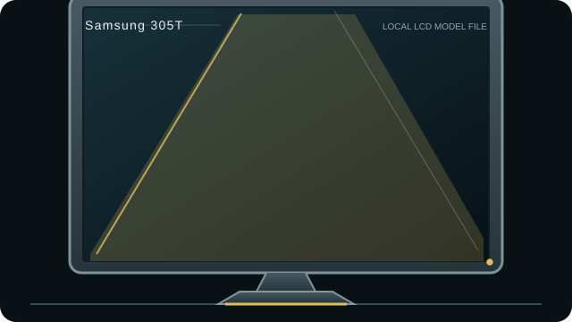

[ INDIVIDUAL COMPONENT // DISPLAYS ]
Samsung SyncMaster 305T
30-inch WQXGA LCD monitor with a high-resolution-only digital connection from the dual-link DVI era.

IDENTIFICATION: Match the complete model and regional suffix on the rear label. This record summarizes published specifications; it is not a substitute for the exact unit manual, cable requirements or physical condition check.
Specifications
| Catalog subcategory | LCD displays |
|---|---|
| Exact product / family | Samsung SyncMaster 305T |
| Panel and native resolution | 30-inch S-PVA LCD, 2560 × 1600 (16:10) |
| Native timing | 2560 × 1600 at 60 Hz |
| Inputs / companion ports | Dual-link DVI-D only; USB 2.0 hub |
| Revision and model distinction | This record is for SyncMaster 305T, not 305T+; the Plus variant has different gamut/brightness specifications. Check the complete rear-label model and manual before ordering parts or using variant data. No HDMI or DisplayPort input is present on the 305T. |
Host compatibility and connection notes
The source GPU must support dual-link DVI at 2560 × 1600 and the cable must have all dual-link conductors. Single-link DVI or ordinary passive HDMI/DisplayPort adapters may not deliver the native mode. USB hub requires a separate upstream cable.
These monitors are from the CCFL-backlight era. Assess lamp aging, color shift, burn-in/retention claims carefully and document unit condition; do not open the chassis without high-voltage training.
Preservation notes
Record the rear-label model, serial/date code, included stand/accessories, tested input, source timing, image condition and calibration state. Keep the matching manual and cable/adaptor chain with the unit; use qualified service procedures for internal work.
Manufacturer documentation and sources
- Samsung SyncMaster 305T owner manualArchived user manual for the exact 305T model.
- Trusted Reviews — Samsung SyncMaster 305T reviewIndependent contemporary review of the 30-inch 305T.